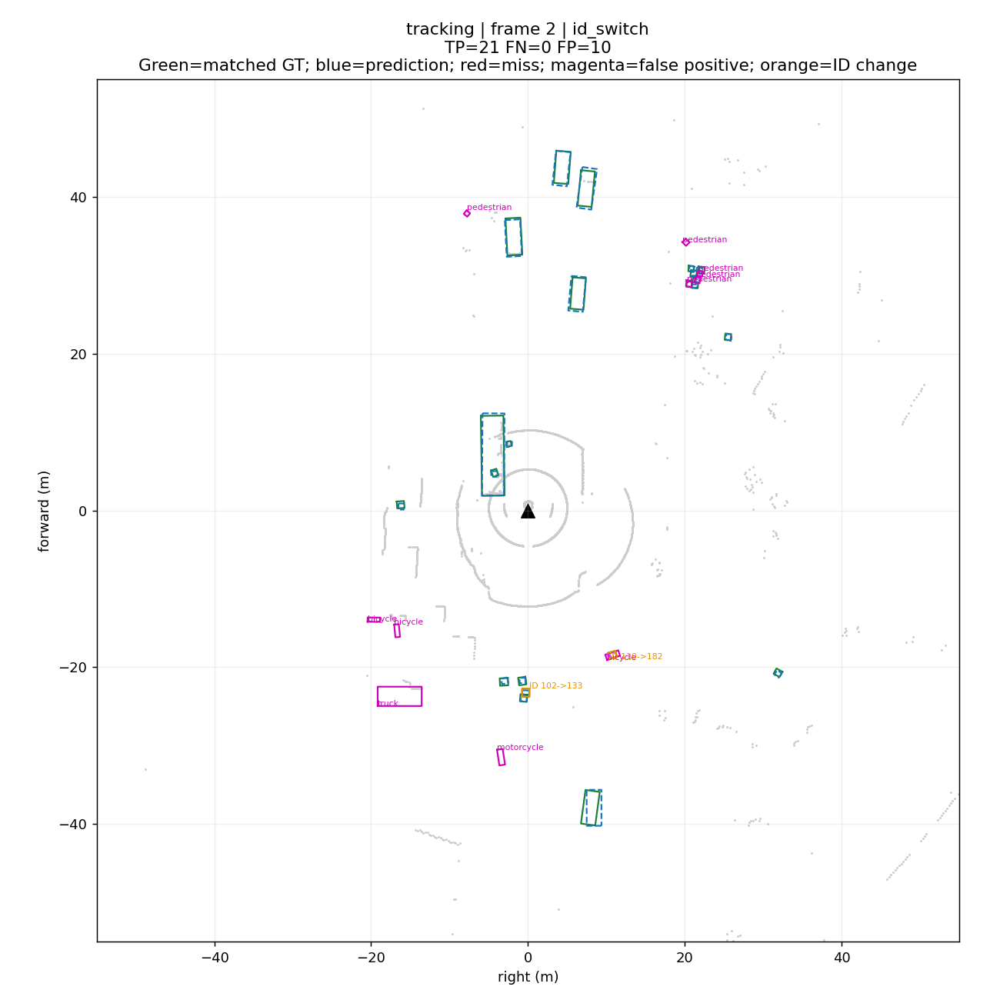
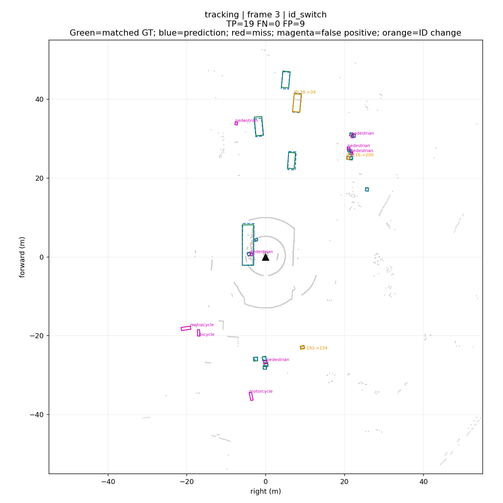
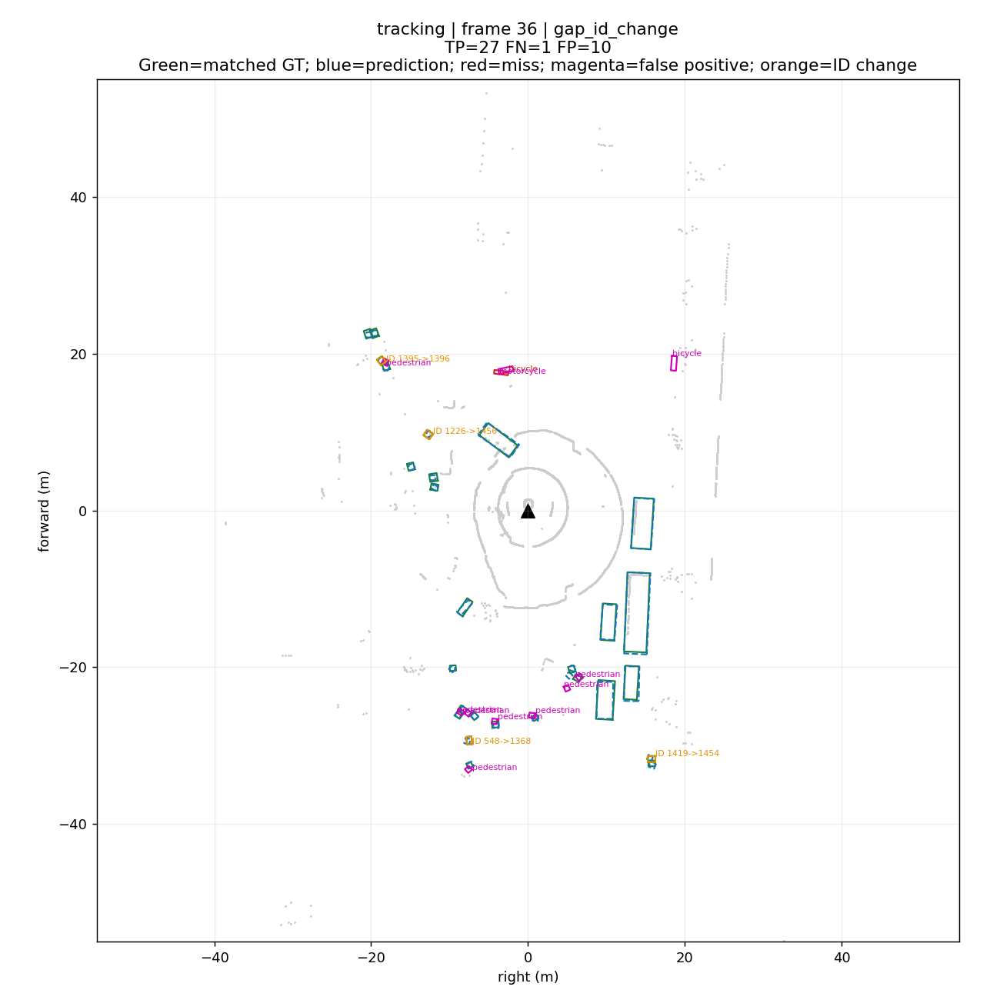
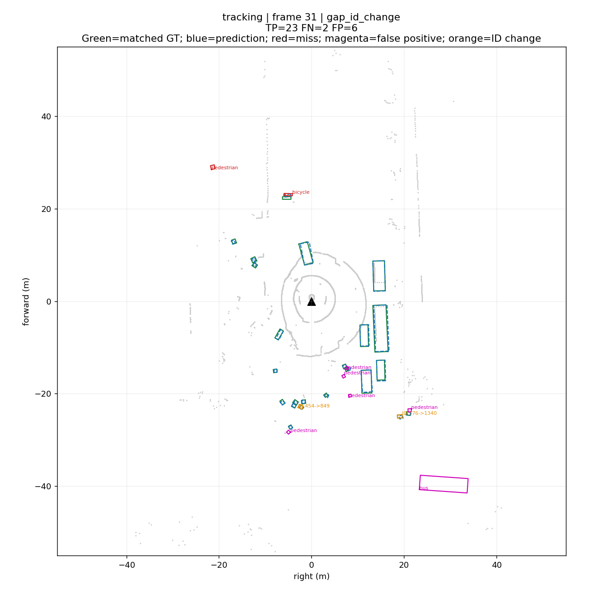
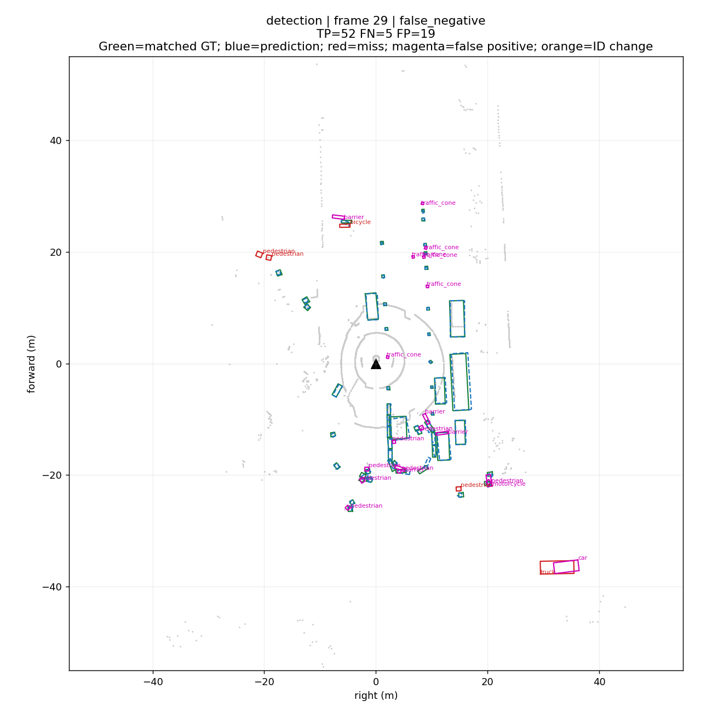
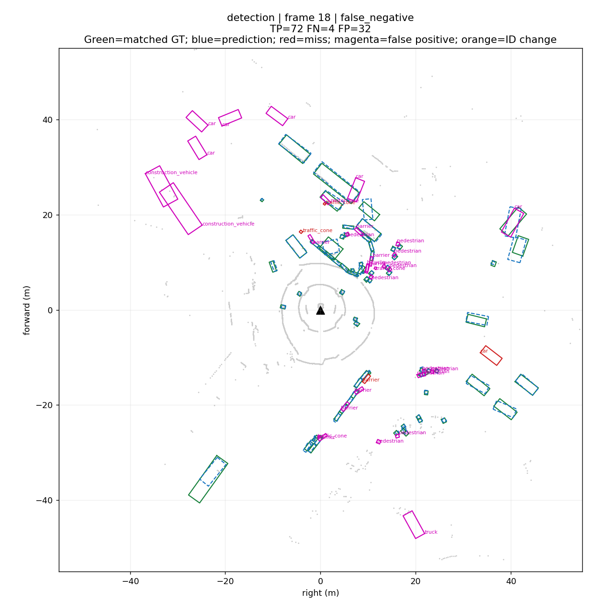
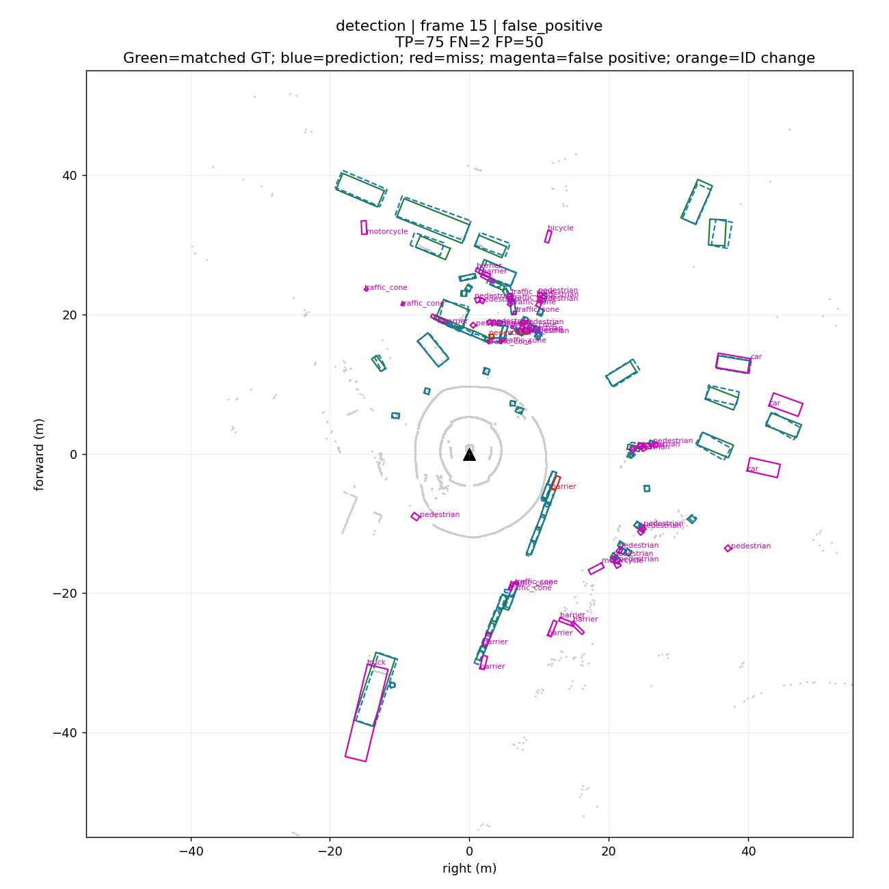
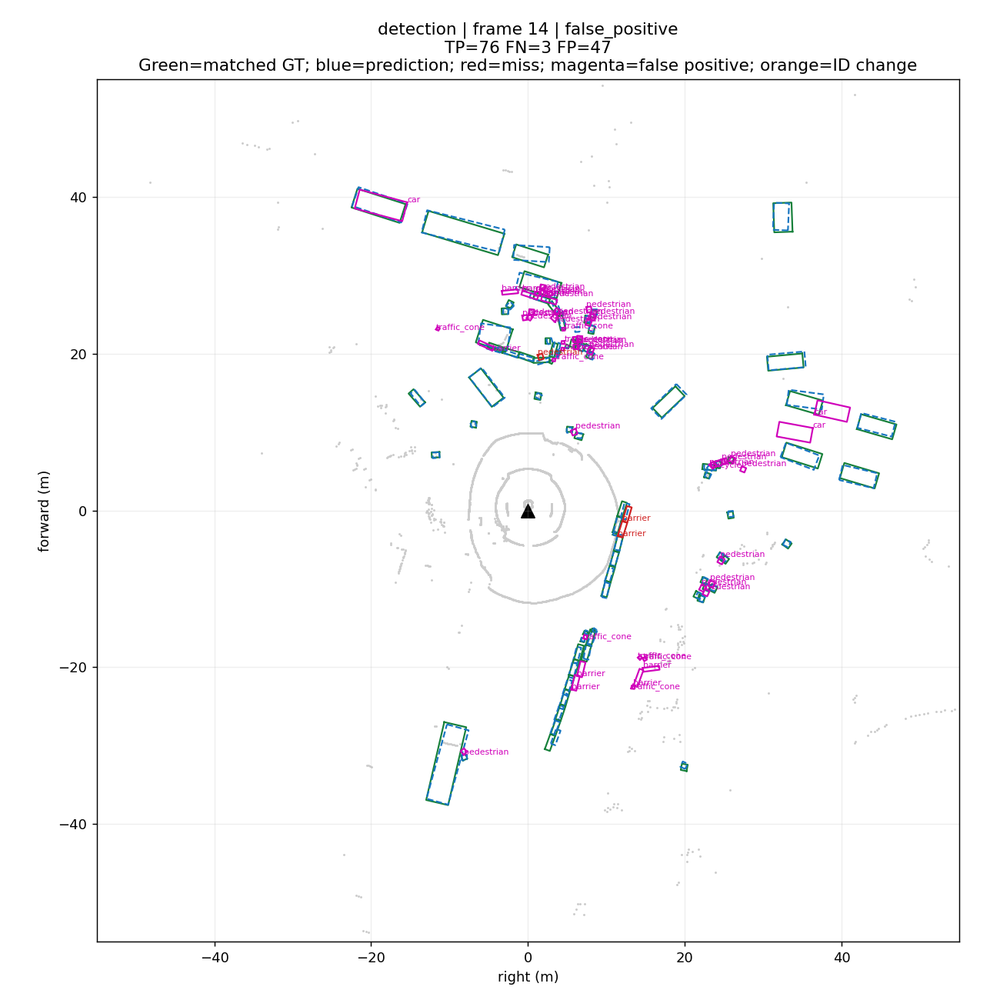
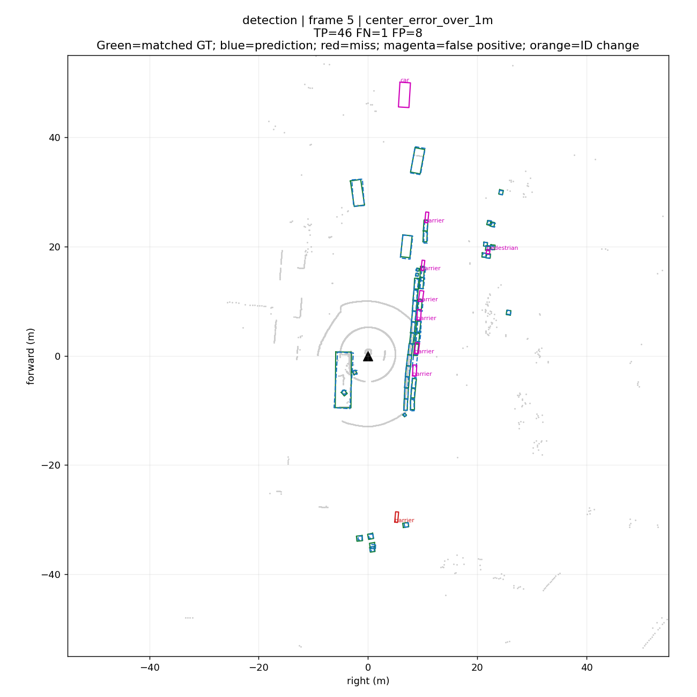
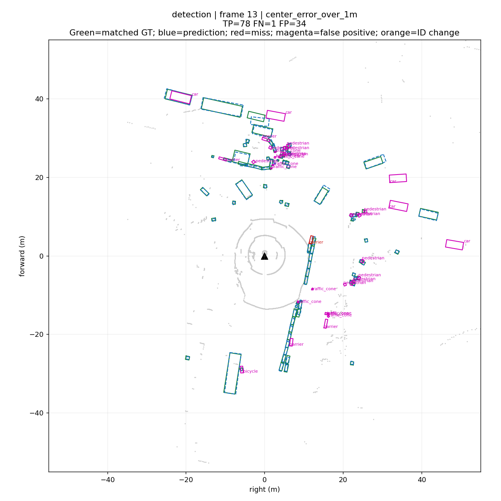

tracking / frame 2 / id_switch
356d81f38dd9473ba590f39e266f54e5

39 帧教学诊断；红色=漏检，紫色=误检，橙色=ID变化。frame 对应 Rerun 时间轴。完整口径见 report.md。
{
"detection": {
"tp": 2235,
"fp": 1020,
"fn": 75,
"gt": 2310,
"predictions": 3255,
"precision": 0.6866359447004609,
"recall": 0.9675324675324676,
"mean_center_error_m": 0.22886771609997472,
"median_center_error_m": 0.13912493962604186,
"events": {}
},
"tracking": {
"tp": 1177,
"fp": 579,
"fn": 39,
"gt": 1216,
"predictions": 1756,
"precision": 0.6702733485193622,
"recall": 0.9679276315789473,
"mean_center_error_m": 0.21201990208947974,
"median_center_error_m": 0.1357112428724846,
"events": {
"id_switch": 46,
"gap_recovery": 34,
"gap_id_change": 38
}
}
}356d81f38dd9473ba590f39e266f54e5

e0845f5322254dafadbbed75aaa07969

67e5f88901214f3aa03d68e028185e22

5fda58ee3ae44ab9b4bbac7a2de66c27

378a3a3e9af346308ab9dff8ced46d9c

bf2938e43c6f487497cda76b51bfc406

cd21dbfc3bd749c7b10a5c42562e0c42

2afb9d32310e4546a71cbe432911eca2

f1e3d9d08f044c439ce86a2d6fcca57b

1e3d79dae62742a0ad64c91679863358
